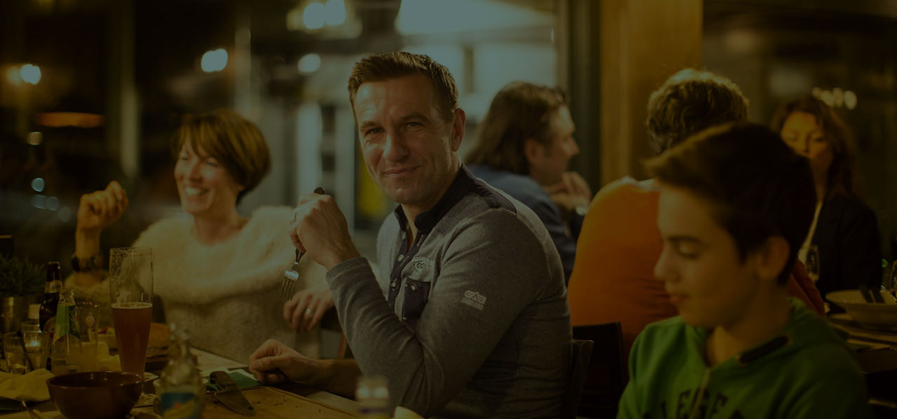
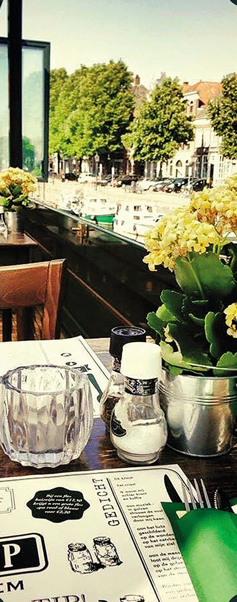
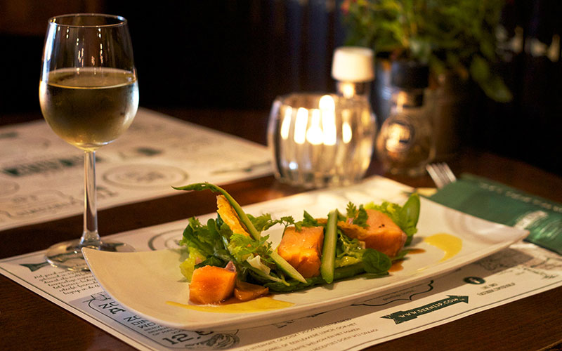
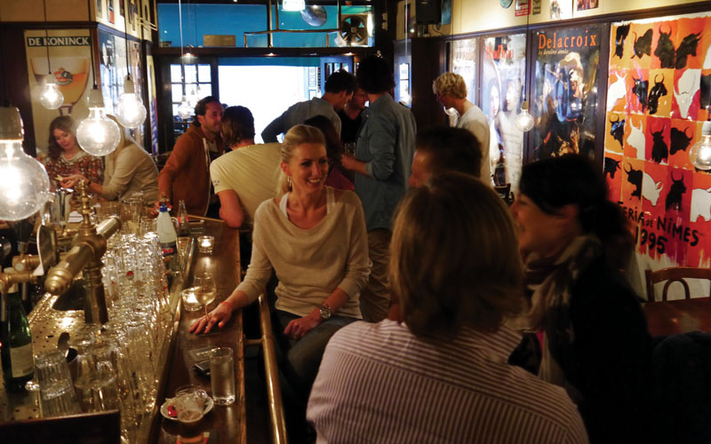

Eetcafé aan de Langendijk, sinds 1981
Bourgondisch uit eten in het gezelligste bruine eetcafé van Gorinchem
De allerbeste biefstuk en saté, een serre aan de Lingehaven en een ouderwetse bruine toog met koperen tapkranen.
Woensdag tot en met zondag open vanaf 16.00 uur
Herkenbaar, smaakvol en betaalbaar
Sinds 1981 is de Knijp het gezelligste bruine eetcafé van de omgeving. We serveren al decennialang de allerbeste biefstuk en saté! Onze kaart staat vol herkenbare, smaakvolle gerechten, compleet met verse groente, salade en verse frieten. Bij ons kun je Bourgondisch lekker uit eten voor een zeer betaalbare prijs.
Wil je rustig dineren, dan zit je het beste in onze serre aan het water, met prachtig uitzicht op de historische Lingehaven. Hou je van meer levendigheid, neem dan plaats in het gezellige cafégedeelte aan de voorzijde.
Reserveren is aan te bevelen, want we zitten regelmatig helemaal vol.
- Allerbeste biefstuk en saté
- Bourgondisch en betaalbaar uit eten
- Serre aan het water met uitzicht over de Lingehaven
- Sfeervol bruin eetcafé
- Enthousiaste medewerkers met liefde voor het vak
- Gezellige drukte tijdens de stapavonden


Dinerkaart
Alle hoofdgerechten en burgers worden geserveerd met verse friet en mayonaise. = vegetarisch
Voorgerechten
- Knijpbol van Bakkerij Van der Grijnhalve bol 3.50 · hele bol 6.75
200 gram | knapperig zuurdesembrood | kruidenboter | Knijp-aioli
Bevat ei, gluten, melk, mosterd, noten, selderij, soja
- Tomatensoep met mascarpone8.50
Knapperig zuurdesembrood | kruidenboter
Bevat gluten, lupine, melk, noten, sesam, soja
- Rundercarpaccio12.75
Parmezaanse kaas | truffelmayo | sla | zonnebloempitten
Bevat ei, gluten, lupine, mosterd, soja, melk, noten, selderij
- Garnalencocktail10.50
Hollandse garnalen | little gem | cocktailsaus
Bevat ei, mosterd, schaaldieren
- Grofgesneden steak tartaar14.75
Oosterse dressing | sla | augurk | rode ui | toast | eidooier
Bevat ei, gluten, melk, lupine, mosterd, soja, sesam, vis
- Scampi's14.00
Gebakken in kruidenboter | tomatensalsa | vers brood
Bevat ei, gluten, lupine, melk, mosterd, schaaldieren, selderij, soja, vis
- Caprese13.50
Burrata | vleestomaat | balsamico | basilicum
Bevat ei, melk, noten, selderij, soja, zwaveldioxide
- Carpaccio van rode biet13.50
Geitenkaas | sla | walnoot | honing
Bevat noten en melk
Goedgevulde maaltijdsalades
Alle salades worden geserveerd met knapperig zuurdesembrood en kruidenboter.
- Salade surf & turf18.50
Gamba's | biefstuk | gemixte sla | Oosterse dressing | zoetzure groente
Bevat ei, gluten, lupine, melk, mosterd, noten, sesamzaad, soja, schaaldieren
- Salade gerookte kip15.00
Kipfilet | gemixte sla | wortel | radijs | ceasardressing
Bevat ei, gluten, lupine, melk, mosterd, noten, pinda, selderij, soja, vis
- Salade geitenkaas uit de oven16.75
Appel | honing | mosterddressing | gemixte sla | walnoot | brood
Bevat ei, gluten, lupine, melk, mosterd, noten, sesamzaad, soja
- Salade rundercarpaccio16.75
Parmezaanse kaas | truffelmayo | gemixte sla | tomatensalsa | zonnebloempitten | brood
Bevat ei, gluten, lupine, melk, mosterd, noten, selderij, soja
Chef Danny's burgerkaart
Alle burgers worden geserveerd met verse friet en mayonaise.
- Chefs Burger met huisgemaakte burgersaus19.50
180 gram Black Angus | brioche bun | sla | cheddar | sticky bacon | uiencompote | vleestomaat
Bevat ei, gluten, lupine, melk, mosterd, noten, selderij, sesamzaad, soja
- BBQ-burger met barbecuesaus en gefrituurde uienringen19.50
180 gram Black Angus | brioche bun | sla | cheddar | sticky bacon | uiencompote | vleestomaat
Bevat ei, gluten, lupine, melk, mosterd, noten, selderij, sesamzaad, soja
- Truffelburger met truffelmayonaise en Parmezaan19.50
180 gram Black Angus | brioche bun | sla | sticky bacon | uiencompote | vleestomaat
Bevat ei, gluten, lupine, melk, mosterd, noten, selderij, sesamzaad, soja
- Burger van rode biet en quinoa17.50
180 gram | brioche bun | sla | cheddar | uiencompote | tomaat | barbecuesaus
Bevat ei, gluten, lupine, melk, mosterd, noten, selderij, sesamzaad, soja
- Italiaanse kipburger17.50
200 gram kipburger | brioche bun | sla | Parmezaan | ham | vleestomaat | pestomayonaise
Bevat ei, gluten, lupine, melk, mosterd, noten, selderij, sesamzaad, soja, pinda
Hoofdgerechten
Alle hoofdgerechten worden geserveerd met verse friet en mayonaise.
- Zuid-Amerikaanse biefstuk (180 gr)24.75
Rumpsteak | verse groente | saus naar keuze
Bevat ei, gluten, mosterd, selderij, soja
- Duitse biefstuk (180 gr)21.50
Rundertartaar | verse groente | saus naar keuze
Bevat ei, gluten, mosterd, selderij, soja
- Saté (200 gram) met pindasaus naar ouderwets Knijprecept17.75
Kippendij | kroepoek | atjar | gefrituurde ui | pindasaus
Bevat ei, gluten, melk, mosterd, noten, pinda's, schaaldieren, selderij, soja, vis
- Ravioli gevuld met spinazie en ricotta22.50
Rode pesto-roomsaus | Parmezaan | geserveerd met brood i.p.v. friet
Bevat ei, lupine, gluten, noten, pinda, mosterd, selderij, soja
- Rundercarpaccio XL23.50
Parmezaanse kaas | truffelmayo | sla | zonnebloempitten
Bevat ei, mosterd, soja, melk, noten
- Malse ossenhaas (200 gram)34.50
Zuid-Amerikaans premium rundvlees | kruidenboter | verse groente
Bevat ei, gluten, mosterd, selderij, soja, melk
- Zalmfilet24.50
Verse groente | kerrie-hollandaisesaus
Bevat gluten, ei, mosterd, melk, soja, selderij, vis, sulfiet
- Kabeljauwfilet23.50
Verse groente | beurre blanc
Bevat ei, gluten, melk, soja, vis
- Bourgondisch gevulde varkenshaas22.00
Ingelegd met mozzarella | omwikkeld met Serranoham | verse groente | saus naar keuze
Bevat ei, gluten, mosterd, selderij, soja, melk, noten
Bijgerechten
- Verse friet met mayo3.50
Bevat ei, gluten, mosterd
- Verse salade met dressing5.50
Voor 2 personen
Bevat ei, gluten, mosterd, melk, noten, soja
- Verse groente5.50
Sauzen 2.50
- Pepersaus
Bevat gluten, soja, melk, selderij
- Champignonsaus
Bevat gluten, ei, lactose, selderij
- Kruidenboter
Bevat gluten, melk, selderij
- Gebakken uien
- Gebakken champignons
Nagerechten
- Dame blanche9.50
Vanille-ijs | chocoladesaus | slagroom
Bevat ei, pinda, noten, melk, soja
- Mislukte appeltaart8.50
Lauwwarm taartje | kaneelijs | slagroom
Bevat ei, gluten, melk, soja
- Zomerse cheesecake9.00
Bastognekoek | witte chocola | citrus | frambozensaus
Bevat gluten, melk, ei
- Aardbeien Romanoff9.50
Verse aardbeien | luchtige slagroom | aardbeienlikeur | aardbeiensorbetijs | merengue
Bevat ei, pinda, noten, melk
- Bol ijs per stuk
Vanille-ijs | kaneelijs | aardbeiensorbetijs | slagroom
Bevat ei, pinda, noten, melk, soja
Zin in iets anders dan een dessert? We maken graag een espresso-martini voor je!
Wijnkaart
Een beknopte kaart met buitengewoon goede wijnen uit Frankrijk, Italië en Spanje. Prijzen per glas / per fles.
Witte wijnen
- Sauvignon Blanc, Beauvignac Languedoc, Frankrijk5.25 / 25.00
Exotisch en verfrissend met citrusvruchten
- Chardonnay, Beauvignac Languedoc, Frankrijk5.50 / 26.00
Rijk en soepel met witte vruchten en vanille
- Viognier, Domaine les Yeuses Languedoc, Frankrijk6.00 / 28.00
Aromatisch en subtiel met rijpe perzik en abrikoos
- Pinot Grigio, Ca' di Rajo Veneto, Italië6.50 / 30.00
Intens, breed en complex met bloemen en tropisch fruit
- Manzoni Bianco, Ca' di Rajo Veneto, Italië7.50 / 35.00
Elegante, volle smaak met lange afdronk en rijp exotisch fruit
- Chardonnay, Joseph Deshaires Bourgogne, Frankrijkfles 45.00
Deze Bourgogne chardonnay smaakt zoals chardonnay bedoeld is: vol, bloemig, licht gerookt en met peer- en citrustonen
Rosé
- Merlot, Le Cazelou Pays d'Oc, Frankrijk5.25 / 25.00
Frisse rosé met perzik en jong rood fruit
Prosecco
- Chardonnay, Ca' di Rajo Mito Veneto, Italië6.25 / 29.00
Zacht maar intens, met rijpe gele vruchten en een milde bubbel
Rode wijnen
- Merlot, Terre Di Rai Veneto, Italië5.25 / 25.00
Rond en intens met zwart fruit en een zachte afdronk
- Syrah, Beauvignac Languedoc, Frankrijk5.50 / 26.00
Kruidig met rijp rood en zwart fruit
- Grenache, Domaine Les Yeuses Languedoc, Frankrijk6.25 / 29.00
Fluweelzacht met peper en chocolade, zonder tannine
- Primitivo, Lenos Puglia, Italië7.75 / 36.00
Volle wijn met intense smaak van rijp rood fruit
- Malbec, Phebus Reservado Mendoza, Argentiniëfles 34.00
Rood fruit, bloemig met houttonen en zachte tannines
- Tempranillo, Bodegas Montecillo Reserva Rioja, Spanjefles 36.00
Dertig maanden gerijpte soepele krachtpatser met structuur. Houttonen, rijp fruit en een lange, zachte afdronk
- Syrah, Crozes Hermitage Fleur de Syrhane Rhône, Frankrijkfles 45.00
Volle, zeer fruitige semi-biologische wijn met rode en zwarte bessen

Borrelen aan de bruine toog
Ook voor alleen een borrel ben je van harte welkom in ons sfeervolle eetcafé. Zijn de tafels gereserveerd voor diner? Ga dan lekker zitten aan de ouderwetse bruine toog met koperen tapkranen en laat je informeel bedienen door onze vrolijke barmedewerkers.
We hebben een uitgekiend assortiment aan bieren, en onze beknopte wijnkaart onderscheidt zich door buitengewoon goede wijnen uit Frankrijk, Italië en Spanje. Ook aan de lekkere trek is gedacht: we zetten graag wat snacks of een van onze borrelplanken op de bar.
Later op de vrijdag- en zaterdagavond is de Knijp een drukke avondkroeg die bruist van de gezelligheid. Onder het genot van lekkere beats schenken we dan volop shots en mixen we onze eigen favoriete cocktails.
Borrelen en uitstekend dineren in een ouderwets gezellige bruine kroeg
Zin in een feestje? Organiseer het in de Knijp!
Heb je binnenkort iets te vieren? Iedere zondag tot en met donderdag kun je de Knijp geheel of gedeeltelijk reserveren voor jouw borrel, etentje of receptie.
- 125personen voor een staande receptie of feestje
- 70personen voor een diner
- 30personen dineren in de serre aan het water
- 40personen borrelen en feesten in een besloten deel van het café
Als je wilt, maken onze koks een gevarieerd aanbod lekkere hapjes, of gewoon een grote schaal bitterballen. Bel of mail ons om te vertellen wat voor feestje je in gedachten hebt en we maken graag een voorstel dat is afgestemd op jouw wensen!
Reserveren & contact
Wanneer je wilt komen eten, is het aan te raden om te reserveren.
Reserveer een tafel- Adres
- Langendijk 53
4201 CG Gorinchem - Telefoon
- 0183 633 540
Telefonisch bereikbaar wo t/m zo van 16.00 tot 22.00 uur - Feestjes
- 06 58 99 26 22
- info@deknijp.com
Openingstijden
| Maandag | gesloten |
|---|---|
| Dinsdag | gesloten |
| Woensdag | 16.00 – 23.00 |
| Donderdag | 16.00 – 23.00 |
| Vrijdag | 16.00 – 02.00 |
| Zaterdag | 16.00 – 02.00 |
| Zondag | 16.00 – 22.00 |